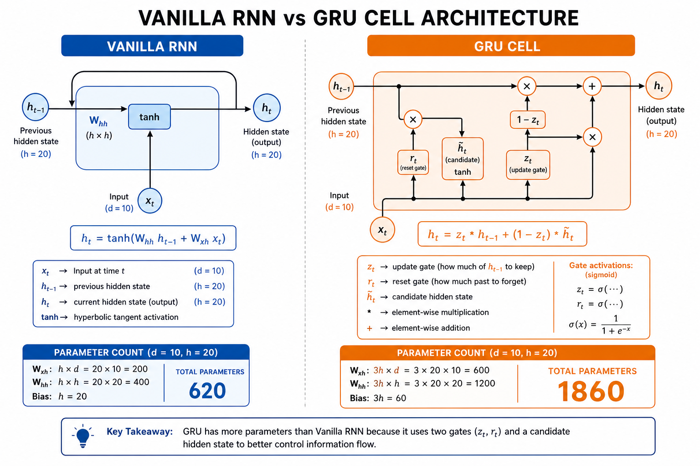

DNN Complete Visual Study Guide
EC2 + EC3 + Mid QP 2024 — All Questions, Theory, Derivations | AIMLCZG511
CLOSED BOOK 21 DIAGRAMS ALL PYQs COVEREDPart 0 — Formula Sheet (Memorize)
Linear modelz = wᵀx + b
Sigmoidσ(z) = 1/(1+e⁻ᶻ)
ReLUmax(0, z)
Softmaxpₖ = exp(zₖ)/Σexp(zⱼ)
BCE gradient ★∂L/∂z = ŷ − y
Weight gradient∇wL = (ŷ−y)x
Perceptron updatew ← w + η(y−ŷ)x
GD updatew ← w − η∇wL
CNN output(N−F+2P)/S + 1
PrecisionTP/(TP+FP)
RecallTP/(TP+FN)
BackpropdZ₂=A₂−Y; dW₂=dZ₂·A₁ᵀ
Conv params(F²·C_in+1)·C_out
Attentionsoftmax(QKᵀ/√d_k)V
GRUh_t=z_t·h_{t−1}+(1−z_t)·h̃_t
Question 1 — Perceptron (EC2 Q1a)

Given: w = [0.5, 0.3, −0.4], x₁=1, x₂=2, y=1, η=0.1, step: ŷ=1 if z≥0 else 0
Compute weighted sum z
z = w₀·1 + w₁·x₁ + w₂·x₂ = 0.5(1) + 0.3(1) + (−0.4)(2) = 0.5 + 0.3 − 0.8 = 0.0
Answer (i): z = 0.0
Apply step activation
z = 0.0 → 0 ≥ 0 is TRUE → ŷ = 1
Answer (ii): ŷ = 1
Check if update needed
y = 1, ŷ = 1 → CORRECTLY CLASSIFIED Perceptron rule: w ← w + η(y−ŷ)x (only when ŷ ≠ y) → No update. Weights stay [0.5, 0.3, −0.4]
Many students blindly apply the update. Always compare ŷ vs y first!
Answer (iii): No update — weights unchanged
Perceptron Code Blanks (Q1d)
Blank 1: np.dot(X[i], weights) Blank 2: y[i] - y_pred Blank 3: learning_rate * error * X[i] ← NOTE: uses + in line 15 (not minus!) Blank 4: np.array([1 if np.dot(x, w) >= 0 else 0 for x in X]) Blank 5: np.mean(preds == y)
Perceptron uses w + η·error·x (ADD). Logistic uses w − η·gradient (SUBTRACT). Don't mix them!
Q1(b) Spam Classifier Theory
(i) Strongest spam indicator: Links (weight 0.9) — highest positive weight pushes toward spam class.
(ii) 75% accuracy plateau reveals: (1) Perceptron converged to best linear boundary. (2) Data is NOT fully linearly separable — ~25% cannot be separated by any line. (3) More epochs won't help — model class is too weak. (4) Need MLP with hidden layers for non-linear patterns.
(ii) 75% accuracy plateau reveals: (1) Perceptron converged to best linear boundary. (2) Data is NOT fully linearly separable — ~25% cannot be separated by any line. (3) More epochs won't help — model class is too weak. (4) Need MLP with hidden layers for non-linear patterns.
Q1(c) Approach A vs B — Generalization
Approach A generalizes better. 500 samples / 5 features = 100 samples per feature vs only 10 for Approach B (50 features). Both get 78% on training, but B likely memorizes word combinations. A uses domain-meaningful features (sentiment, star rating) that transfer to new reviews.
Question 2 — Linear Regression (EC2 Q2a)
Given: X=[[1,10],[1,20]], y=[150,250], w₀=50, w₁=8, η=0.01, N=2
Predictions
ŷ₁ = 50 + 8(10) = 130 ŷ₂ = 50 + 8(20) = 210
ŷ = [130, 210]
MSE Loss
MSE = (1/2)[(150−130)² + (250−210)²]
= (1/2)[400 + 1600] = 1000
MSE = 1000
Gradient
error = ŷ − y = [−20, −40]
gradient = Xᵀ · error / N
= [−60, −1000] / 2
= [−30, −500]
Negative gradient means predictions are too LOW → weights should increase
Weight update
w₀_new = 50 − 0.01(−30) = 50.30 w₁_new = 8 − 0.01(−500) = 13.0
New weights = [50.30, 13.0]
Q2(b) Linear Regression Code Blanks
Blank 1: np.dot(X, weights) Blank 2: np.mean((y_pred - y)**2) Blank 3: np.dot(X.T, error) / N Blank 4: weights - lr * gradient Blank 5: train_linear(X, y)
Q2(c) Salary Prediction & RMSE
Salary = 30000 + 2500(4) + 3000(2) = $46,000 — reasonable for entry-level with 4 yrs education + 2 yrs experience.
RMSE = √5,000,000 = $2,236 — acceptable (~4–7% of typical salary range).
RMSE = √5,000,000 = $2,236 — acceptable (~4–7% of typical salary range).
Q2(d) Normalized vs Original Features
Model B (normalized) trains faster. Area values 400–2000 create an elongated error surface → GD zigzags. After z-score normalization, surface is more circular → faster convergence. Both reach identical final weights and test MSE.
Question 3 — Logistic Regression (EC2 Q3a)

Given: w=[0, 0.6, 0.8], x=[1, 0.7, 0.5], y=1, η=0.1
Weighted sum z
z = 0 + 0.6(0.7) + 0.8(0.5) = 0.42 + 0.40 = 0.82
Sigmoid probability
ŷ = 1/(1 + e^(−0.82)) = 1/(1 + 0.440) ≈ 0.694
69.4% approval probability — model under-predicts since true label is 1
Gradient (golden formula)
∇w = (ŷ − y) · x = (0.694 − 1) · [1, 0.7, 0.5]
= [−0.306, −0.214, −0.153]
Updated weights
w₀ = 0 − 0.1(−0.306) = 0.031 w₁ = 0.6 − 0.1(−0.214) = 0.621 w₂ = 0.8 − 0.1(−0.153) = 0.815
w_new ≈ [0.031, 0.621, 0.815]
Imbalanced Accuracy (Q3c)
Accuracy = (40 + 855) / 1000 = 89.5% Naive "always healthy" classifier = 950/1000 = 95% accuracy! Our "smart" model is WORSE than doing nothing.
On imbalanced data, always report Precision, Recall, F1 — not just accuracy.
Q3(b) Logistic Code Blanks
Blank 1: 1 / (1 + np.exp(-z)) Blank 2: sigmoid(z) Blank 3: np.dot(X_batch.T, (y_pred - y_batch)) / len(y_batch) Blank 4: weights - lr * gradient Blank 5: (sigmoid(np.dot(X, weights)) >= 0.5).astype(int)
Q3(c)(ii) Threshold & Recall vs Precision
For life-threatening disease: Recall > Precision — missing disease (FN) is fatal; false alarm (FP) is extra test only.
Lower threshold 0.5→0.3: FP increases, FN decreases, Recall increases.
Lower threshold 0.5→0.3: FP increases, FN decreases, Recall increases.
Q3(d) Fraud Detection — Deploy Model B
Model B catches 75 more frauds × $100 = $7,500 saved. 1% accuracy gain is marginal; 15% fraud detection improvement dominates. Deploy Model B despite 20 vs 3 features.
Question 4 — Softmax & Confusion Matrix (EC2 Q4)


Softmax Calculation
Exponentials
e²·⁰ = 7.389, e¹·⁰ = 2.718, e⁰·⁵ = 1.649 Sum = 11.756
Probabilities
p₀ = 7.389/11.756 = 0.629 (negative) p₁ = 2.718/11.756 = 0.231 (neutral) ← TRUE CLASS p₂ = 1.649/11.756 = 0.140 (positive)
CCE Loss & Prediction
L = −log(0.231) = 1.47 Predicted = argmax = Class 0 (negative) → WRONG
Loss = 1.47 | Prediction incorrect
Bird Class Metrics (Q4c)
| Metric | Formula | Value |
|---|---|---|
| TP | True Bird → Pred Bird | 250 |
| FP | Not Bird → Pred Bird (5 cats + 30 dogs) | 35 |
| FN | True Bird → Not Bird (10 cats + 40 dogs) | 50 |
| Precision | 250/(250+35) | 87.7% |
| Recall | 250/(250+50) | 83.3% |
Q4(b) Softmax Code Blanks
Blank 1: exp_Z / np.sum(exp_Z, axis=1, keepdims=True) Blank 2: np.dot(X_batch, W) Blank 3: np.dot(X_batch.T, (Y_pred - Y_batch)) / len(Y_batch) Blank 4: W - lr * gradient Blank 5: np.argmax(np.dot(X, W), axis=1)
Q4(c)(ii) Bird-Dog Confusion Pattern
Birds misclassified as dogs (40/50 errors) → model learned shared visual features. 88% overall accuracy does NOT guarantee good per-class performance — always check precision/recall per class.
Q4(d) Hospital TB Model — Deploy Model B
Model B: 85% accuracy but 78% TB recall vs Model A: 92% accuracy but only 45% TB recall. Missing TB is catastrophic (contagious, fatal). 7% accuracy drop is acceptable to catch most TB cases.
Question 5 — DFNN Forward & Backprop (EC2 Q5)

Given: x=[0.5, 0.8], W¹=[[1,0.5],[-0.5,1.5]], b¹=[0.2,−0.3], w²=[1.2,0.8], b²=0.1, y=1
Hidden pre-activation Z¹
z₁ = 0.5(1.0) + 0.8(−0.5) + 0.2 = 0.3 z₂ = 0.5(0.5) + 0.8(1.5) − 0.3 = 1.15 Z¹ = [0.3, 1.15]
ReLU activation A¹
A¹ = [max(0,0.3), max(0,1.15)] = [0.3, 1.15]
Output & Loss
z² = 0.3(1.2) + 1.15(0.8) + 0.1 = 1.38 ŷ = sigmoid(1.38) ≈ 0.799 BCE = −log(0.799) ≈ 0.225
ŷ ≈ 0.799 | Loss ≈ 0.225

Backprop Code Blanks (Q5b)
Blank 1: np.maximum(0, Z) # ReLU Blank 2: relu(Z1) Blank 3: np.dot(A1.T, dZ2) / N # dW2 Blank 4: np.dot(dZ2, W2.T) # dA1 Blank 5: np.dot(X.T, dZ1) / N # dW1 Key chain: dZ2 = A2 - Y dW2 = A1.T @ dZ2 / N dA1 = dZ2 @ W2.T dZ1 = dA1 * (Z1 > 0) ← ReLU mask dW1 = X.T @ dZ1 / N
Q5(c) Parameter Count & Overfitting
Input(1000)→Hidden(8)→Output(5): 1000×8 + 8×5 = 8,040 params. 50,000/8,040 ≈ 6 samples/param — borderline OK.
High train acc + low test acc causes: (1) Model too large — memorizes noise. (2) Insufficient regularization — add dropout, L2, early stopping.
High train acc + low test acc causes: (1) Model too large — memorizes noise. (2) Insufficient regularization — add dropout, L2, early stopping.
Q5(d) Mobile vs Cloud Architecture
Mobile → Architecture A: 5ms×1M = 1.4 hr/day vs 45ms = 12.5 hr/day. 3.4 GB RAM exceeds phone budget. 2% accuracy not worth 9× slowdown.
Cloud → Architecture B: Unlimited compute/RAM; 2% accuracy matters at scale.
Cloud → Architecture B: Unlimited compute/RAM; 2% accuracy matters at scale.
CCE + Softmax Gradient Derivation (Jacobian)

Step 1 — Loss
L = −Σ y_i log(p̂_i) [one-hot: L = −log(p̂_k)]
Step 2 — ∂L/∂p̂_i
∂L/∂p̂_i = −y_i / p̂_i
Step 3 — Softmax Jacobian
∂p̂_i/∂z_j = p̂_i(δ_ij − p̂_j)
Softmax couples ALL outputs — changing one logit affects every probability.
Step 4 — Chain rule
∂L/∂z_j = Σ(−y_i/p̂_i)·p̂_i(δ_ij−p̂_j) = p̂_j − y_j
Step 5 — Vector form
∇_z L = p̂ − y | ∂L/∂W = (p̂−y)xᵀ
Same elegant form as BCE+Sigmoid: Gradient = Prediction − Target
Mid QP 2024 — All 6 Questions (Closed Book)
Q1 — MLP Design for Non-Linear Boundary [6 marks]

Minimum architecture: Input(2) → Hidden(2) → Output(1)
H1: detects inner region (x²+y² < r₁²) → +1 inside
H2: detects outer region (x²+y² < r₂²) → +1 inside outer circle
Output: combines H1, H2 → +1 for inner class, −1 for outer ring
Step activation at each node: output = +1 if weighted sum ≥ threshold (write threshold inside node).
Why 1 perceptron fails: Single line cannot separate concentric circles — not linearly separable (XOR principle extended to 2D).
H1: detects inner region (x²+y² < r₁²) → +1 inside
H2: detects outer region (x²+y² < r₂²) → +1 inside outer circle
Output: combines H1, H2 → +1 for inner class, −1 for outer ring
Step activation at each node: output = +1 if weighted sum ≥ threshold (write threshold inside node).
Why 1 perceptron fails: Single line cannot separate concentric circles — not linearly separable (XOR principle extended to 2D).
Q2 — CNN Output Shapes [5 marks]

(a) 8×8, 3×3 conv S=1 P=0 → 6×6
(b) 5 filters → 6×6×5
(c) MaxPool 4×4 S=2 → 2×2×5
(b) 5 filters → 6×6×5
(c) MaxPool 4×4 S=2 → 2×2×5
Q3 — Transfer Learning [4 marks]

| Rakesh (scratch, 100) | Ram (pretrain→fine-tune) | |
|---|---|---|
| Problem | Overfitting | Domain mismatch |
| Fix | Regularization, more data | Freeze early layers, small LR |
Q4 — Gradient Descent E(w₁,w₂) [5 marks]
E = 3w₁² + 4w₂² + 2w₁w₂, (0.5,0.5), η=0.1 Gradients: (4, 5) | New weights: (0.1, 0.0)
Q5 — CNN vs FC + Accuracy Drop [5 marks]
(a) Parameter sharing + local connectivity/translation equivariance
(b) Training acc decreasing = divergence (LR too high), NOT overfitting. Fix: reduce η.
(b) Training acc decreasing = divergence (LR too high), NOT overfitting. Fix: reduce η.
Q6 — Hyperparameters & CNN vs ANN [5 marks]
η, batch size, epochs, layers, neurons, activation, optimizer, dropout, L2.
CNN preferred: 2500-pixel image → millions of FC params vs 27 per conv filter. CNN preserves spatial structure.
CNN preferred: 2500-pixel image → millions of FC params vs 27 per conv filter. CNN preserves spatial structure.
EC3 Q1 — Hospital X-ray DFNN (10-class)

(a)(i) ReLU inference: z = 0.4(0.8)+0.1(−0.5)+(−0.2)(0.2)+0.5 = 0.73
(a)(ii) Softmax: p_i = exp(z_i)/Σexp(z_j) — valid 10-class probability distribution
(a)(iii) H1: ReLU max(0,z) | H2: Leaky ReLU max(αz,z) | Output: Softmax
(b)(i) Perceptron = one linear boundary; 10-class needs non-linear regions; XOR analogy
(b)(ii) Vanishing gradients from sigmoid saturation → early layers don't learn. Fix: ReLU + skip connections (ResNet)
(a)(ii) Softmax: p_i = exp(z_i)/Σexp(z_j) — valid 10-class probability distribution
(a)(iii) H1: ReLU max(0,z) | H2: Leaky ReLU max(αz,z) | Output: Softmax
(b)(i) Perceptron = one linear boundary; 10-class needs non-linear regions; XOR analogy
(b)(ii) Vanishing gradients from sigmoid saturation → early layers don't learn. Fix: ReLU + skip connections (ResNet)
EC3 Q2 — Churn Prediction DFNN

(a)(i) Sigmoid + BCE paired — probability output + logarithmic penalty; gradient = ŷ−y
(a)(ii) P=0.73 > 0.5 → Predict Churn. Threshold = decision boundary for retention action
(b)(i) DFNN captures non-linear feature interactions + hierarchical representations
(b)(ii) ReLU (fast, sparse) in H1; Leaky ReLU (prevents dying ReLU) in H2
(b)(iii) Architecture: Input(4) → H1(64, ReLU) → H2(32, Leaky ReLU) → Out(1, Sigmoid) + BCE
(a)(ii) P=0.73 > 0.5 → Predict Churn. Threshold = decision boundary for retention action
(b)(i) DFNN captures non-linear feature interactions + hierarchical representations
(b)(ii) ReLU (fast, sparse) in H1; Leaky ReLU (prevents dying ReLU) in H2
(b)(iii) Architecture: Input(4) → H1(64, ReLU) → H2(32, Leaky ReLU) → Out(1, Sigmoid) + BCE
EC3 Q3 — Skin Cancer CNN + Edge Device


Transfer learning YES: 8000 images, imbalanced melanoma (600), pretrained features help
ResNet FC: Removed 2,049,000 | Added 1,052,679 | Net −996,321
Layer 1: (5×5×3+1)×32 = 2,432 | Layer 8 FC: 100352×256+256 = 25,690,368
4-channel input: Layer1 = 3,232 (+32.9%); Layer 3 & 8 unchanged
GAP Option A: 128→10 = 1,290 params (vs 25.6M). Adv: edge deployment. Disadv: loses spatial info
128×128 crop drop: context loss + train/inference scale mismatch
Infrared RF claim: FALSE — RF depends on kernel/stride/depth, not input channels
ResNet FC: Removed 2,049,000 | Added 1,052,679 | Net −996,321
Layer 1: (5×5×3+1)×32 = 2,432 | Layer 8 FC: 100352×256+256 = 25,690,368
4-channel input: Layer1 = 3,232 (+32.9%); Layer 3 & 8 unchanged
GAP Option A: 128→10 = 1,290 params (vs 25.6M). Adv: edge deployment. Disadv: loses spatial info
128×128 crop drop: context loss + train/inference scale mismatch
Infrared RF claim: FALSE — RF depends on kernel/stride/depth, not input channels
EC3 Q4 — RNN / GRU Factory Anomaly

Q4(a) Params
RNN (d=10,h=20) = 620 | GRU = 1,860
Choose GRU: gated memory, fewer params than LSTM, fits edge device
Q4(b)(i) Vanilla RNN
pre_act = [1.1, 0.1] → h_t = tanh ≈ [0.80, 0.10]
Q4(b)(ii) GRU
z_t ≈ [0.88, 0.73] | h̃_t ≈ [0.76, 0.46] | h_t ≈ [0.53, −0.24]
Q4(b)(iii) Conservative update
GRU retains 88% of h_{t−1} at dim 0 — smaller change than vanilla RNNQ4(c) BPTT
∂L/∂h₂ = 0.9 | ∂L/∂h₁ = 0.81 | RNN preferred over Transformer: O(1) streaming vs O(L²)
EC3 Q5 — Attention Mechanisms


Dot-product (Q5a): scores = [9.19, 9.19, 24.74], context ≈ [8, 3]
Missing: causal masking — model copies past instead of predicting future
Additive (Q5b): e_j = vᵀtanh(W_q q + W_k k_j), context ≈ [1.47, 0.72]
External DB → Cross-attention | Diverse clinical signals → Multi-head self-attention
Multi-head: d_k = 512/8 = 64 per head; different heads learn different temporal patterns
Missing: causal masking — model copies past instead of predicting future
Additive (Q5b): e_j = vᵀtanh(W_q q + W_k k_j), context ≈ [1.47, 0.72]
External DB → Cross-attention | Diverse clinical signals → Multi-head self-attention
Multi-head: d_k = 512/8 = 64 per head; different heads learn different temporal patterns
EC3 Q6 — Transformers for Clinical NLP

Positional encoding: injects token order — without it, "fever then cough" = "cough then fever"
Architecture match: NER → Encoder (BERT) | Generation → Decoder (GPT) | Summarisation → Encoder-Decoder (T5)
Tensor dims: (B,128,512) → (B,128,2048) → (B,128,512)
Encoder layer params: MHA ~1.05M + FFN ~2.10M = ~3.15M total
Pre-LN vs Post-LN: Pre-LN more stable early training; Post-LN slightly better final perf with tuning
Summarisation: Fine-tune T5/BART — don't train from scratch with 50K pairs
O(L²) bottleneck: 2048 tokens → 4M attention scores. Mitigation: sliding window attention
Architecture match: NER → Encoder (BERT) | Generation → Decoder (GPT) | Summarisation → Encoder-Decoder (T5)
Tensor dims: (B,128,512) → (B,128,2048) → (B,128,512)
Encoder layer params: MHA ~1.05M + FFN ~2.10M = ~3.15M total
Pre-LN vs Post-LN: Pre-LN more stable early training; Post-LN slightly better final perf with tuning
Summarisation: Fine-tune T5/BART — don't train from scratch with 50K pairs
O(L²) bottleneck: 2048 tokens → 4M attention scores. Mitigation: sliding window attention
EC3 Q7 — Optimizers & Regularization


| Curve/Run | Answer | Why |
|---|---|---|
| A | SGD | Smooth, very slow |
| B | SGD+Momentum | Fast, oscillates |
| C | RMSprop | Fast, plateaus higher |
| D | Adam | Fastest, lowest loss |
| Schedule X | Constant high LR | Sharp rise then oscillates |
| Schedule Y | Constant low LR | Early plateau |
| Schedule Z | Cosine annealing + restarts | Dip then recovers to best |
| Run 1 (98/71) | Overfitting | Fix: Dropout + L2 |
| Run 2 (84/83) | Underfitting | Model too weak |
| Run 3 (91/90) | Good fit | Optimal |
| Run 4 (76/74) | Unstable | BatchNorm fixes this |
Val loss ↑ while train loss ↓ = Overfitting → weight decay or LR reduction
BatchNorm on Run 4: normalizes activations per mini-batch → stable training, faster convergence, higher LR allowed
BatchNorm on Run 4: normalizes activations per mini-batch → stable training, faster convergence, higher LR allowed
Activation Functions Reference
| Function | Formula | Range | Derivative | Use |
|---|---|---|---|---|
| Step | 1 if z≥0 else 0 | {0,1} | — | Perceptron |
| Sigmoid | 1/(1+e⁻ᶻ) | (0,1) | ŷ(1−ŷ) | Binary output |
| ReLU | max(0,z) | [0,∞) | 1 if z>0 else 0 | Hidden layers |
| Leaky ReLU | max(αz,z) | (−∞,∞) | 1 or α | Fixes dying ReLU |
| Softmax | exp(zᵢ)/Σexp(zⱼ) | ŷ−y (shortcut) | Multi-class output |
BCE + Sigmoid Gradient Derivation (Must-Know)
Step 1 — Write the loss
L = −[y·log(ŷ) + (1−y)·log(1−ŷ)] where ŷ = σ(z)
Step 2 — ∂L/∂ŷ
∂L/∂ŷ = −[y/ŷ − (1−y)/(1−ŷ)]
Step 3 — ∂ŷ/∂z (sigmoid derivative)
∂ŷ/∂z = ŷ(1−ŷ)
Step 4 — Chain rule & simplify
∂L/∂z = −[y/ŷ − (1−y)/(1−ŷ)] · ŷ(1−ŷ)
= −y(1−ŷ) + (1−y)ŷ
= ŷ − y ★ BEAUTIFUL CANCELLATION ★
Step 5 — Weight gradient
∇w L = (∂L/∂z)(∂z/∂w) = (ŷ − y) · x
This is why logistic regression AND neural network output layers are so simple!
Exam Strategy (Closed Book)
Time allocation (100 marks, 2 hrs): Q1=20min, Q2=20min, Q3=25min, Q4=20min, Q5=25min
Attack order: (1) Scan all questions (2) Numerical first (3) Code blanks (4) Theory in 5-point bullets
Common mistakes: Perceptron uses + not − | Forget bias x₀=1 | Wrong precision/recall denominator | Update perceptron when already correct
Attack order: (1) Scan all questions (2) Numerical first (3) Code blanks (4) Theory in 5-point bullets
Common mistakes: Perceptron uses + not − | Forget bias x₀=1 | Wrong precision/recall denominator | Update perceptron when already correct
Self-Test — Close This Page First
- Perceptron: w=[0.2,−0.5,0.3], x=[1,2,1], y=0, η=0.1
- Linear reg: one batch GD step with X=[[1,5],[1,15]], y=[100,200], w=[10,5]
- Logistic: w=[0,1,−0.5], x=[1,0.8,0.6], y=0
- Softmax: z=[1,3,2], y=[0,0,1] → probabilities, CCE, prediction
- DFNN forward: x=[1,0], W¹=[[1,1],[0,1]], ReLU+sigmoid
- CNN: 32×32 input, 5×5 conv S=1, then 2×2 pool S=2
- GRU: compute z_t, h̃_t, h_t for one step
- Attention: scaled dot-product with q=[2,7], k=[7,3], d_k=2
Click to reveal answers
1: z=−0.5, ŷ=0, correct, no update 2: ŷ=[35,85], MSE=1125, w≈[10.125, 4.625] 3: z=0.5, σ≈0.622, gradient=(0.622)·x 4: p=[0.09, 0.67, 0.25], L=1.41, pred=class 1 (wrong) 5: Z¹=[1,0], A¹=[1,0], z²=1, ŷ≈0.731 6: Conv→28×28, Pool→14×14 7: z_t=σ([2,1])≈[0.88,0.73], h̃=tanh([1,0.5])≈[0.76,0.46] 8: score=(2×7+7×3)/√2=24.74